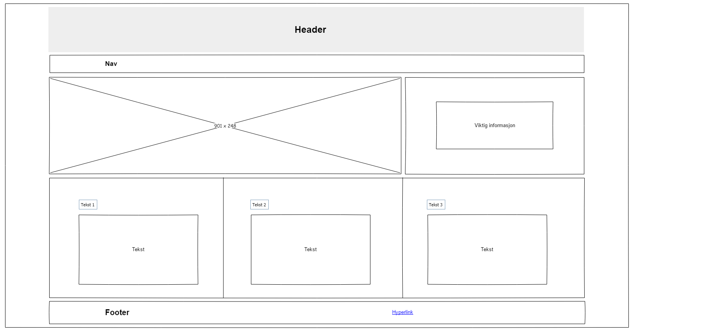
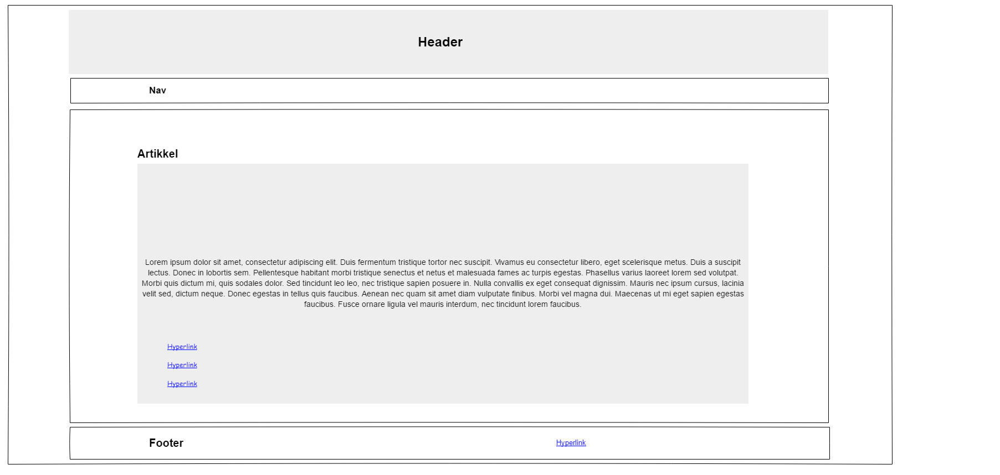

Om denne siden
Planlegging av nettstedet
Med dette nettstedet har jeg først laget meg noen wireframes i programmet "Pencil" som du ser nedenfor.
Disse er grunnlaget for forsiden og artikkelsidene.
På denne siden tester jeg ut "Grid"-funksjonen i CSS. Dette gjør så jeg kan plassere elementer i forhold til hvor jeg har satt dem i "griden".
Det er lagt mer fokus på design/CSS, så det gjelder å style flere tagger og elementer.
Wireframe for forsiden
Wireframe for artikkelsiden
| Beskrivelse | URL |
|---|---|
| Brukt litt 1stwebdesigner.com som inspirasjon og tips | 1stwebdesigner |
| Bruker W3Schools for forklaring og tips til kode i HTML/CSS | W3Schools |
| Bruker W3 HTML validator for å sjekke koden for feil | HTML Validator |